← 本轮 smoke 总览traex/DeepSeek-V4.1-Flash · 0048
vision-agent · 256×144 · 4.0 FPS · 20 帧 · 状态 complete · 输出 tokens 48634
原始任务Static locked-off single-shot with fixed frame throughout filmed with constant framerate in real-time. The scene shows a realistic scientific demonstration. The scene only contains the described setup and actions. The mug is sitting on a wooden surface. The blue-black grabber tool drops the white ceramic domino into the mug that is filled with a dark-colored liquid.
当前保存结果
已保存候选与代码修改
这里按时间展示外部捕获的候选，每份均可单独播放。保存新版本不等于完成视觉检查；下方工具证据记录实际看过的图。
候选 01 · 2026-11-09T01:59:38.968254+00:00 · 点开播放与检查图
inspection.png

transition_check.png
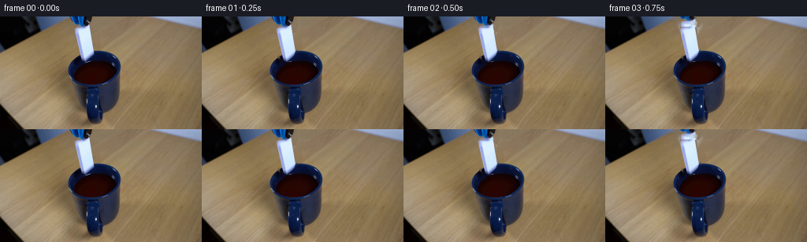
代码变化
--- 上一保存版本
+++ 本次保存版本
@@ -0,0 +1,277 @@
+from pathlib import Path
+
+import cv2
+import numpy as np
+
+import artifact_io
+
+
+ROOT = Path(__file__).resolve().parent
+WIDTH, HEIGHT = 256, 144
+FRAME_COUNT, FPS = 20, 4
+
+
+def smoothstep(edge0, edge1, value):
+ value = np.clip((value - edge0) / (edge1 - edge0), 0.0, 1.0)
+ return value * value * (3.0 - 2.0 * value)
+
+
+def composite_rgba(base, rgba, matrix):
+ rgb = cv2.warpAffine(
+ rgba[:, :, :3],
+ matrix,
+ (WIDTH, HEIGHT),
+ flags=cv2.INTER_LINEAR,
+ borderMode=cv2.BORDER_CONSTANT,
+ borderValue=0,
+ )
+ alpha = cv2.warpAffine(
+ rgba[:, :, 3],
+ matrix,
+ (WIDTH, HEIGHT),
+ flags=cv2.INTER_LINEAR,
+ borderMode=cv2.BORDER_CONSTANT,
+ borderValue=0,
+ )
+ alpha = np.clip(alpha.astype(np.float32) / 255.0, 0.0, 1.0)[:, :, None]
+ return base.astype(np.float32) * (1.0 - alpha) + rgb.astype(np.float32) * alpha
+
+
+def transform_about(center, dx, dy, angle=0.0, scale=1.0):
+ angle = np.deg2rad(angle)
+ cosine, sine = np.cos(angle) * scale, np.sin(angle) * scale
+ rotation = np.array([[cosine, -sine], [sine, cosine]], dtype=np.float32)
+ center = np.asarray(center, dtype=np.float32)
+ translation = np.asarray([dx, dy], dtype=np.float32) + center - rotation @ center
+ return np.column_stack([rotation, translation]).astype(np.float32)
+
+
+def make_plate(frame):
+ mask = np.zeros((HEIGHT, WIDTH), dtype=np.uint8)
+ domino = np.array(
+ [[94, 12], [117, 12], [120, 43], [112, 59], [101, 59], [95, 45]],
+ dtype=np.int32,
+ )
+ gripper = np.array(
+ [[86, 0], [130, 0], [128, 17], [113, 20], [98, 17], [89, 13]],
+ dtype=np.int32,
+ )
+ cv2.fillPoly(mask, [domino, gripper], 255)
+ mask = cv2.dilate(mask, np.ones((3, 3), np.uint8), iterations=1)
+ bgr = frame[:, :, ::-1]
+ cleaned = cv2.inpaint(bgr, mask, 5, cv2.INPAINT_TELEA)
+ return cleaned[:, :, ::-1]
+
+
+def make_domino_sprite(frame):
+ sprite = np.zeros((HEIGHT, WIDTH, 4), dtype=np.uint8)
+ mask = np.zeros((HEIGHT, WIDTH), dtype=np.uint8)
+ polygon = np.array(
+ [[95, 13], [115, 13], [119, 42], [113, 57], [102, 58], [96, 44]],
+ dtype=np.int32,
+ )
+ cv2.fillPoly(mask, [polygon], 255)
+ mask = cv2.GaussianBlur(mask, (0, 0), 0.55)
+ sprite[:, :, :3] = frame
+ sprite[:, :, 3] = mask
+ return sprite
+
+
+def make_gripper_sprite(frame, plate):
+ sprite = np.zeros((HEIGHT, WIDTH, 4), dtype=np.uint8)
+ roi = np.zeros((HEIGHT, WIDTH), dtype=np.uint8)
+ roi[0:21, 84:131] = 255
+
+ color_distance = np.max(np.abs(frame.astype(np.int16) - plate.astype(np.int16)), axis=2)
+ alpha = smoothstep(7.0, 22.0, color_distance) * (roi > 0)
+ alpha = cv2.GaussianBlur(alpha.astype(np.float32), (0, 0), 0.45)
+ alpha *= roi.astype(np.float32) / 255.0
+
+ sprite[:, :, :3] = frame
+ sprite[:, :, 3] = np.clip(alpha * 255.0, 0, 255).astype(np.uint8)
+ return sprite
+
+
+def liquid_ellipse():
+ yy, xx = np.mgrid[0:HEIGHT, 0:WIDTH].astype(np.float32)
+ distance = ((xx - 119.0) / 25.0) ** 2 + ((yy - 72.5) / 14.5) ** 2
+ return xx, yy, distance
+
+
+def draw_ripples(image, time_since_impact):
+ if time_since_impact < 0:
+ return image
+
+ xx, yy, ellipse = liquid_ellipse()
+ inside = smoothstep(1.06, 0.88, ellipse)
+ result = image.astype(np.float32)
+
+ for ring_index in range(4):
+ age = time_since_impact - ring_index * 0.18
+ if age <= 0:
+ continue
+ radius = 1.3 + 11.5 * age
+ thickness = 0.55 + 0.22 * age
+ amplitude = 0.25 * np.exp(-0.92 * age) / (1.0 + 0.34 * age)
+ if amplitude < 0.018:
+ continue
+ ring_distance = np.sqrt(
+ ((xx - 115.0) / 1.0) ** 2 + ((yy - 66.0) / 0.42) ** 2
+ )
+ band = np.exp(-((ring_distance - radius) / thickness) ** 2)
+ crest = band * inside * amplitude
+ trough = np.exp(-((ring_distance - radius - 0.7) / (thickness * 1.5)) ** 2)
+ trough = trough * inside * amplitude * 0.42
+ result += crest[:, :, None] * np.array([83.0, 42.0, 21.0], dtype=np.float32)
+ result -= trough[:, :, None] * np.array([20.0, 8.0, 3.0], dtype=np.float32)
+
+ center_glow = np.exp(-(((xx - 115.0) / 2.2) ** 2 + ((yy - 66.0) / 0.9) ** 2))
+ decay = np.exp(-1.8 * time_since_impact)
+ result += (center_glow * inside * 28.0 * decay)[:, :, None] * np.array(
+ [1.0, 0.45, 0.20], dtype=np.float32
+ )
+ return np.clip(result, 0, 255).astype(np.uint8)
+
+
+def draw_droplets(image, time_since_impact):
+ if time_since_impact < 0 or time_since_impact > 1.55:
+ return image
+
+ result = image.copy()
+ droplets = [
+ (-19.0, -43.0, 0.0, 0.95),
+ (-11.0, -58.0, 0.0, 1.15),
+ (-4.0, -67.0, 0.0, 0.80),
+ (7.0, -62.0, 0.0, 1.00),
+ (15.0, -49.0, 0.0, 0.85),
+ (22.0, -34.0, 0.0, 0.75),
+ (-25.0, -31.0, 0.0, 0.72),
+ (3.0, -76.0, 0.0, 0.65),
+ ]
+ for index, (vx, vy, delay, scale) in enumerate(droplets):
+ age = time_since_impact - delay - index * 0.025
+ if age <= 0:
+ continue
+ x = 115.0 + vx * age
+ y = 62.0 + vy * age + 54.0 * age * age
+ if y > 83.0:
+ continue
+ radius = max(0.55, scale * (1.55 - 0.55 * age))
+ center = (int(round(x)), int(round(y)))
+ cv2.circle(result, center, max(1, int(round(radius))), (75, 22, 8), -1, cv2.LINE_AA)
+ if radius > 0.9:
+ cv2.circle(
+ result,
+ (center[0], center[1] - 1),
+ max(1, int(round(radius * 0.36))),
+ (172, 92, 51),
+ -1,
+ cv2.LINE_AA,
+ )
+ return result
+
+
+def draw_bubbles(image, time_since_impact):
+ if time_since_impact < 0.35 or time_since_impact > 2.8:
+ return image
+ result = image.copy()
+ bubbles = [
+ (111.0, 64.5, 0.48, 1.15),
+ (119.5, 62.8, 0.72, 0.85),
+ (107.0, 67.0, 0.98, 0.72),
+ (123.0, 67.2, 1.18, 0.60),
+ ]
+ for x, y, start, size in bubbles:
+ age = time_since_impact - start
+ if age <= 0 or age > 1.2:
+ continue
+ pulse = 0.75 + 0.25 * np.sin(age * 12.0)
+ radius = max(0.5, size * pulse * (1.0 - age / 1.5))
+ cv2.ellipse(
+ result,
+ (int(round(x)), int(round(y))),
+ (max(1, int(round(radius * 1.5))), max(1, int(round(radius)))),
+ 0,
+ 0,
+ 360,
+ (86, 49, 31),
+ 1,
+ cv2.LINE_AA,
+ )
+ return result
+
+
+def clip_domino_below_water(rgba, matrix):
+ warped = cv2.warpAffine(
+ rgba,
+ matrix,
+ (WIDTH, HEIGHT),
+ flags=cv2.INTER_LINEAR,
+ borderMode=cv2.BORDER_CONSTANT,
+ borderValue=0,
+ )
+ yy, xx = np.mgrid[0:HEIGHT, 0:WIDTH].astype(np.float32)
+ waterline = 58.8 + 0.0105 * (xx - 116.0) ** 2
+ visible = smoothstep(waterline + 1.0, waterline - 0.6, yy)
+ warped[:, :, 3] = (warped[:, :, 3].astype(np.float32) * visible).astype(np.uint8)
+ return warped
+
+
+def domino_pose(frame_index):
+ # The ceramic domino is released after a brief held beat, then decelerates
+ # as it crosses the opaque liquid surface.
+ if frame_index <= 1:
+ return 0.0, 0.0, 1.0
+ drop = [0.0, 0.0, 1.8, 6.5, 13.2, 21.8, 31.8, 42.5, 54.0, 66.0]
+ index = min(frame_index - 2, len(drop) - 1)
+ dy = drop[index]
+ progress = min(1.0, dy / 60.0)
+ angle = 1.8 * np.sin(progress * np.pi * 0.75) - 2.5 * progress
+ scale = 1.0 - 0.035 * progress
+ return dy, angle, scale
+
+
+def gripper_pose(frame_index):
+ if frame_index <= 1:
+ return 0.0, 0.0
+ retract = [0.0, 1.2, 7.5, 16.0]
+ index = min(frame_index - 1, len(retract) - 1)
+ return retract[index], 0.8 * min(1.0, retract[index] / 8.0)
+
+
+def render_frame(plate, domino, gripper, frame_index):
+ image = plate.copy()
+
+ dy, angle, scale = domino_pose(frame_index)
+ domino_matrix = transform_about((106.5, 35.0), 0.6 * min(1.0, dy / 16.0), dy, angle, scale)
+ warped_domino = clip_domino_below_water(domino, domino_matrix)
+ image = composite_rgba(image, warped_domino, np.array([[1, 0, 0], [0, 1, 0]], np.float32))
+
+ retract, drift = gripper_pose(frame_index)
+ if retract < 19.5:
+ gripper_matrix = transform_about((109.0, 7.0), drift, -retract, 0.8 * min(1.0, retract / 12.0), 1.0)
+ image = composite_rgba(image, gripper, gripper_matrix)
+
+ impact_time = 1.0
+ time_since_impact = frame_index / FPS - impact_time
+ image = draw_ripples(image, time_since_impact)
+ image = draw_bubbles(image, time_since_impact)
+ image = draw_droplets(image, time_since_impact)
+ return np.clip(image, 0, 255).astype(np.uint8)
+
+
+def main():
+ original = np.array(cv2.imread(str(ROOT / "first_frame.png"))[:, :, ::-1], dtype=np.uint8)
+ plate = make_plate(original)
+ domino = make_domino_sprite(original)
+ gripper = make_gripper_sprite(original, plate)
+
+ frames = [original.copy()]
+ for frame_index in range(1, FRAME_COUNT):
+ frames.append(render_frame(plate, domino, gripper, frame_index))
+
+ artifact_io.save(np.stack(frames), ROOT)
+
+
+if __name__ == "__main__":
+ main()
候选 02 · 2026-11-09T02:00:43.372293+00:00 · 点开播放与检查图
inspection.png

transition_check.png

代码变化
--- 上一保存版本
+++ 本次保存版本
@@ -67,11 +67,13 @@
sprite = np.zeros((HEIGHT, WIDTH, 4), dtype=np.uint8)
mask = np.zeros((HEIGHT, WIDTH), dtype=np.uint8)
polygon = np.array(
- [[95, 13], [115, 13], [119, 42], [113, 57], [102, 58], [96, 44]],
+ [[94, 12], [113, 12], [115, 17], [116, 25], [117, 35], [118, 43],
+ [118, 48], [115, 55], [111, 57], [106, 57], [103, 54], [101, 48],
+ [100, 42], [98, 34], [97, 26], [96, 19]],
dtype=np.int32,
)
cv2.fillPoly(mask, [polygon], 255)
- mask = cv2.GaussianBlur(mask, (0, 0), 0.55)
+ mask = cv2.GaussianBlur(mask, (0, 0), 0.42)
sprite[:, :, :3] = frame
sprite[:, :, 3] = mask
return sprite
@@ -139,14 +141,14 @@
result = image.copy()
droplets = [
- (-19.0, -43.0, 0.0, 0.95),
- (-11.0, -58.0, 0.0, 1.15),
- (-4.0, -67.0, 0.0, 0.80),
- (7.0, -62.0, 0.0, 1.00),
- (15.0, -49.0, 0.0, 0.85),
- (22.0, -34.0, 0.0, 0.75),
- (-25.0, -31.0, 0.0, 0.72),
- (3.0, -76.0, 0.0, 0.65),
+ (-12.0, -27.0, 0.0, 0.72),
+ (-6.0, -36.0, 0.03, 0.86),
+ (1.0, -39.0, 0.02, 0.66),
+ (8.0, -34.0, 0.05, 0.78),
+ (14.0, -24.0, 0.06, 0.62),
+ (18.0, -16.0, 0.08, 0.55),
+ (-17.0, -14.0, 0.10, 0.54),
+ (3.0, -44.0, 0.04, 0.48),
]
for index, (vx, vy, delay, scale) in enumerate(droplets):
age = time_since_impact - delay - index * 0.025
@@ -217,6 +219,30 @@
return warped
+def add_domino_shadow(image, dy):
+ if dy < 2.0:
+ return image
+ yy, xx = np.mgrid[0:HEIGHT, 0:WIDTH].astype(np.float32)
+ angle = np.deg2rad(56.0)
+ u = (xx - 109.0) * np.cos(angle) + (yy - 53.0) * np.sin(angle)
+ v = -(xx - 109.0) * np.sin(angle) + (yy - 53.0) * np.cos(angle)
+ shadow = np.exp(-((u - 3.0) / (12.0 + 0.03 * dy)) ** 2 - (v / 3.2) ** 2)
+ strength = 0.30 * min(1.0, (dy - 2.0) / 16.0)
+ result = image.astype(np.float32) * (1.0 - strength * shadow[:, :, None])
+ return np.clip(result, 0, 255).astype(np.uint8)
+
+
+def tint_submerged_domino(image, rgba):
+ alpha = rgba[:, :, 3].astype(np.float32) / 255.0
+ yy, xx = np.mgrid[0:HEIGHT, 0:WIDTH].astype(np.float32)
+ waterline = 58.8 + 0.0105 * (xx - 116.0) ** 2
+ depth = np.clip((yy - waterline) / 15.0, 0.0, 1.0)
+ submerged = (alpha * smoothstep(0.0, 0.28, depth))[:, :, None]
+ coffee = np.array([48.0, 14.0, 5.0], dtype=np.float32)
+ result = image.astype(np.float32) * (1.0 - 0.58 * submerged) + coffee * (0.58 * submerged)
+ return np.clip(result, 0, 255).astype(np.uint8)
+
+
def domino_pose(frame_index):
# The ceramic domino is released after a brief held beat, then decelerates
# as it crosses the opaque liquid surface.
@@ -246,6 +272,8 @@
domino_matrix = transform_about((106.5, 35.0), 0.6 * min(1.0, dy / 16.0), dy, angle, scale)
warped_domino = clip_domino_below_water(domino, domino_matrix)
image = composite_rgba(image, warped_domino, np.array([[1, 0, 0], [0, 1, 0]], np.float32))
+ image = add_domino_shadow(image, dy)
+ image = tint_submerged_domino(image, warped_domino)
retract, drift = gripper_pose(frame_index)
if retract < 19.5:
候选 03 · 2026-11-09T02:03:34.513743+00:00 · 点开播放与检查图
inspection.png

transition_check.png
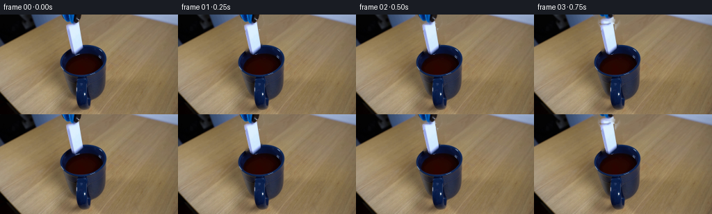
代码变化
--- 上一保存版本
+++ 本次保存版本
@@ -132,6 +132,39 @@
result += (center_glow * inside * 28.0 * decay)[:, :, None] * np.array(
[1.0, 0.45, 0.20], dtype=np.float32
)
+ return np.clip(result, 0, 255).astype(np.uint8)
+
+
+def draw_persistent_meniscus(image, frame_index):
+ if frame_index < 6:
+ return image
+ yy, xx = np.mgrid[0:HEIGHT, 0:WIDTH].astype(np.float32)
+ inside = smoothstep(1.08, 0.88, ((xx - 119.0) / 25.0) ** 2 + ((yy - 72.5) / 14.5) ** 2)
+ time_since_impact = frame_index / FPS - 1.0
+ phase = np.exp(-0.30 * time_since_impact) * min(1.0, (frame_index - 5) / 2.0)
+ drift = 0.20 * np.sin(time_since_impact * 3.7)
+
+ # A shallow depression around the submerged tile and a long, low-frequency
+ # disturbance near the far rim keep the surface alive as the splash decays.
+ tile_wake = np.exp(-(((xx - 116.0) / 12.5) ** 2 + ((yy - 63.5) / 2.4) ** 2))
+ broad_wave = np.exp(-((yy - 61.5 - 0.45 * np.sin(xx * 0.24 + time_since_impact * 2.1)) / 1.6) ** 2)
+ highlight = (tile_wake * 8.0 + broad_wave * 2.8) * inside * phase
+ shade = tile_wake * 4.5 * inside * phase
+ result = image.astype(np.float32)
+ result += highlight[:, :, None] * np.array([1.0, 0.46, 0.20], dtype=np.float32)
+ result -= shade[:, :, None] * np.array([0.45, 0.12, 0.04], dtype=np.float32)
+
+ # Small, irregular wet reflections around the cup rim.
+ for index, (x, y, width, height, strength) in enumerate(
+ [(105.0, 61.4, 3.8, 0.55, 5.2), (121.0, 60.7, 4.5, 0.48, 4.1), (132.0, 64.0, 2.9, 0.42, 2.8)]
+ ):
+ wobble = 0.6 * np.sin(frame_index * 0.9 + index * 1.7)
+ reflection = np.exp(
+ -(((xx - x - wobble) / width) ** 4 + ((yy - y - 0.15 * np.sin(xx * 0.7 + index)) / height) ** 2)
+ )
+ result += (reflection * inside * strength * (0.8 + 0.2 * np.sin(frame_index + index)))[:, :, None] * np.array(
+ [0.75, 0.33, 0.15], dtype=np.float32
+ )
return np.clip(result, 0, 255).astype(np.uint8)
@@ -285,6 +318,7 @@
image = draw_ripples(image, time_since_impact)
image = draw_bubbles(image, time_since_impact)
image = draw_droplets(image, time_since_impact)
+ image = draw_persistent_meniscus(image, frame_index)
return np.clip(image, 0, 255).astype(np.uint8)
可观测工具行为
命令 1 · 2026-11-09T01:54:38.643861+00:00/bin/bash -c "pwd && rg --files -g '"'!*.pyc'"' -g '"'!__pycache__'"' | sed -n '1,200p'"
exit 0 命令 2 · 2026-11-09T01:54:38.767917+00:00/bin/bash -c "sed -n '1,240p' prompt.txt"
exit 0 命令 3 · 2026-11-09T01:54:39.058550+00:00/bin/bash -c "sed -n '1,280p' GENERATION_RULES.md"
exit 0 命令 4 · 2026-11-09T01:54:39.244601+00:00/bin/bash -c 'file first_frame.png && identify first_frame.png 2>/dev/null || true && ls -lah'
exit 0 命令 5 · 2026-11-09T01:54:51.788826+00:00/bin/bash -c "sed -n '1,260p' artifact_io.py"
exit 0 命令 6 · 2026-11-09T01:54:52.478913+00:00/bin/bash -c "python - <<'PY'
from PIL import Image
im=Image.open('first_frame.png')
print(im.mode, im.size)
PY"exit 0 命令 7 · 2026-11-09T01:54:52.581886+00:00/bin/bash -c "python - <<'PY'
mods=['numpy','cv2','PIL','scipy','skimage','imageio','matplotlib']
for m in mods:
try:
x=__import__(m)
print(m, getattr(x,'__version__','ok'))
except Exception as e: print(m, 'NO', repr(e))
PY"
exit 0 命令 8 · 2026-11-09T01:54:59.068982+00:00/bin/bash -c "python - <<'PY'
from PIL import Image
im=Image.open('first_frame.png')
im.crop((70,0,155,95)).resize((680,760),Image.Resampling.NEAREST).save('.tmp/crop_start.png')
im.resize((1024,576),Image.Resampling.NEAREST).save('.tmp/full_up.png')
PY"exit 0 命令 9 · 2026-11-09T01:55:42.579813+00:00/bin/bash -c "python - <<'PY'
from PIL import Image
import numpy as np
im=np.array(Image.open('first_frame.png'))
# print grid categories around tool/domino
for y in range(0,62,2):
s=''
for x in range(85,145,2):
r,g,b=im[y:y+2,x:x+2].mean((0,1))
if b>r*1.25 and b>g*1.1: c='B'
elif r>145 and g>145 and b>145: c='W'
elif r>115 and g>100 and b<110: c='w'
elif r<50 and g<50 and b<55: c='K'
elif r>80 and g>65 and b>45: c='.'
else: c=' '
s+=c
print(f'{y:02d} {s}')
print('samples')
for y,x in [(5,120),(12,106),(14,103),(16,102),(18,100),(20,99),(30,104),(45,103),(52,104),(55,107),(58,105),(62,105)]:
print(x,y,im[y,x])
PY"exit 0 命令 10 · 2026-11-09T01:55:53.576724+00:00/bin/bash -c "python - <<'PY'
from PIL import Image,ImageDraw,ImageFont
im=Image.open('first_frame.png').resize((1024,576),Image.Resampling.NEAREST)
d=ImageDraw.Draw(im)
for x in range(0,257,10):
X=x*4
d.line((X,0,X,576),fill=(255,0,0),width=1)
d.text((X+2,2),str(x),fill=(255,255,0))
for y in range(0,145,10):
Y=y*4
d.line((0,Y,1024,Y),fill=(255,0,0),width=1)
d.text((2,Y+2),str(y),fill=(255,255,0))
im.save('.tmp/grid.png')
PY"exit 0 命令 11 · 2026-11-09T01:56:00.848296+00:00/bin/bash -c "python - <<'PY'
from PIL import Image
im=Image.open('first_frame.png')
# exact line samples in region
for y in range(4,60,4):
row=[]
for x in range(92,126,2):
row.append('%02x%02x%02x'%im.getpixel((x,y)))
print(y,' '.join(row))
PY"exit 0 命令 12 · 2026-11-09T01:56:05.078899+00:00/bin/bash -c "python - <<'PY'
from PIL import Image
import numpy as np
im=np.array(Image.open('first_frame.png'))
for y in [50,54,56,58,60,62,64,66,68,70,72,74,76,78,80,84,88,92,96,100,104,108]:
# print liquid x bounds: red dominant low blue
a=im[y]
mask=(a[:,0]>30)&(a[:,0]>a[:,2]*1.35)&(a[:,0]>a[:,1]*1.4)
ids=np.where(mask)[0]
print(y, (ids.min(),ids.max(),len(ids)) if len(ids) else None)
PY"exit 0 命令 13 · 2026-11-09T01:56:09.356238+00:00/bin/bash -c "python - <<'PY'
from PIL import Image
import numpy as np
im=np.array(Image.open('first_frame.png'))
# per x row detect liquid-like colored fill from y 50 to 84
for x in range(90,145,2):
a=im[:,x]
m=(a[:,0]>25)&(a[:,0]>a[:,2]*1.25)&(a[:,0]>a[:,1]*1.15)
ids=np.where(m & (np.arange(144)>=48)&(np.arange(144)<90))[0]
print(x, (ids.min(),ids.max(),len(ids)) if len(ids) else None)
PY"exit 0 命令 14 · 2026-11-09T01:56:14.604221+00:00/bin/bash -c "python - <<'PY'
from PIL import Image
import numpy as np
im=np.array(Image.open('first_frame.png')).astype(float)
# principal color clusters in likely mug bbox via simple kmeans
from sklearn.cluster import KMeans
PY"exit 0 命令 15 · 2026-11-09T01:56:19.821666+00:00/bin/bash -c "python - <<'PY'
from PIL import Image
import numpy as np
from sklearn.cluster import KMeans
im=np.array(Image.open('first_frame.png'))
patch=im[80:126,88:150].reshape(-1,3)
km=KMeans(6,random_state=0,n_init=10).fit(patch)
for c,n in zip(km.cluster_centers_,np.bincount(km.labels_)):
print(n,np.round(c).astype(int))
PY"exit 0 命令 16 · 2026-11-09T01:56:23.676874+00:00/bin/bash -c "python - <<'PY'
from PIL import Image
im=Image.open('first_frame.png')
for name,box in [('mug',(80,50,160,130)),('grip',(85,0,150,60)),('liquid',(90,55,145,90)),('handle',(95,75,145,135))]:
im.crop(box).resize(((box[2]-box[0])*8,(box[3]-box[1])*8),Image.Resampling.NEAREST).save('.tmp/'+name+'.png')
PY"exit 0 命令 17 · 2026-11-09T01:57:08.267420+00:00/bin/bash -c "python - <<'PY'
import cv2, numpy as np
from PIL import Image
im=cv2.imread('first_frame.png')[:,:,::-1]
mask=np.zeros(im.shape[:2],np.uint8)
poly=np.array([[97,10],[114,9],[126,61],[100,63]],np.int32)
cv2.fillPoly(mask,[poly],255)
# include dark left shadow
cv2.polylines(mask,[poly],True,255,2)
for rad in [2,4,7]:
p=cv2.inpaint(im[:,:,::-1],mask,rad,cv2.INPAINT_TELEA)[:,:,::-1]
Image.fromarray(p).save(f'.tmp/plate{rad}.png')
Image.fromarray(p[0:100,75:160]).resize((680,800),Image.Resampling.NEAREST).save(f'.tmp/platecrop{rad}.png')
PY"exit 0 命令 18 · 2026-11-09T01:57:55.189017+00:00/bin/bash -c "python - <<'PY'
from PIL import Image
import numpy as np, cv2
im=np.array(Image.open('first_frame.png'))
Y,X=np.mgrid[:144,:256]
ell=(((X-115)/27.0)**2+((Y-73)/14.0)**2<1)
m=(im[:,:,0]>24)&(im[:,:,0]>im[:,:,2]*1.1)&(im[:,:,0]>im[:,:,1]*1.05)&ell
print(m.sum(), np.where(m)[1].min(),np.where(m)[1].max(),np.where(m)[0].min(),np.where(m)[0].max())
# save vis
vis=im.copy();vis[m]=[255,0,255]
Image.fromarray(vis).resize((1024,576),Image.Resampling.NEAREST).save('.tmp/liquidmask.png')
PY"exit 0 命令 19 · 2026-11-09T01:58:01.528189+00:00/bin/bash -c "python - <<'PY'
from PIL import Image
im=Image.open('first_frame.png')
# print selected colors
for xy in [(110,72),(120,72),(110,60),(120,61),(90,72),(100,80),(120,80),(140,72),(118,90),(120,100),(120,55),(120,54),(125,45)]: print(xy, im.getpixel(xy))
PY"exit 0 命令 20 · 2026-11-09T01:58:05.272728+00:00/bin/bash -c "python - <<'PY'
from PIL import Image
import numpy as np
im=np.array(Image.open('first_frame.png'))
for y in range(58,89,2):
print('y',y,[(x,tuple(im[y,x])) for x in [96,100,104,108,112,116,120,124,128,132,136,140]])
PY"exit 0 命令 21 · 2026-11-09T01:58:12.368963+00:00/bin/bash -c "python - <<'PY'
from PIL import Image
import numpy as np
im=np.array(Image.open('first_frame.png'))
# print every column rough mug blue segment from y 85 down
for y in [86,88,90,94,98,102,106,110,114,118,122,126,130,134,138,142]:
a=im[y]
# blue dark area x>85, b>r*1.4
m=(a[:,2]>a[:,0]*1.4)&(a[:,2]>a[:,1]*1.1)&(a[:,2]>30)
ids=np.where(m & (np.arange(256)>85))[0]
print(y,(ids.min(),ids.max(),len(ids)) if len(ids) else None)
PY"exit 0 命令 22 · 2026-11-09T01:58:16.360021+00:00/bin/bash -c "python - <<'PY'
from PIL import Image
import numpy as np
im=np.array(Image.open('first_frame.png'))
# top liquid boundary per x: find first dark red strong in central region
for x in range(94,143,2):
a=im[:,x].astype(int)
m=(a[:,0]>20)&(a[:,0]>a[:,2]*3)&(a[:,0]>a[:,1]*3)
ys=np.where(m & (np.arange(144)>=50)&(np.arange(144)<90))[0]
print(x,ys.min() if len(ys) else None,ys.max() if len(ys) else None)
PY"exit 0 命令 23 · 2026-11-09T01:58:20.774087+00:00/bin/bash -c "python - <<'PY'
from PIL import Image
import numpy as np
im=np.array(Image.open('first_frame.png'))
# domino region line extents based on bright pixels
for y in range(12,62,2):
a=im[y]
m=(a[:,0]>105)&(a[:,1]>115)&(a[:,2]>145)&(np.arange(256)>=95)&(np.arange(256)<130)
ids=np.where(m)[0]
print(y,(ids.min(),ids.max(),len(ids)) if len(ids) else None)
PY"exit 0 命令 24 · 2026-11-09T01:59:28.430705+00:00/bin/bash -c 'python generate.py'
exit 1 命令 25 · 2026-11-09T01:59:37.299183+00:00/bin/bash -c 'python generate.py'
exit 0 命令 26 · 2026-11-09T01:59:45.423309+00:00/bin/bash -c "python - <<'PY'
from PIL import Image,ImageDraw
ims=[Image.open(f'frames/{i:02d}.png') for i in range(20)]
sheet=Image.new('RGB',(256*5,144*4),(20,20,20))
d=ImageDraw.Draw(sheet)
for i,im in enumerate(ims):
x=(i%5)*256;y=(i//5)*144
sheet.paste(im,(x,y));d.text((x+4,y+4),str(i),fill=(255,255,0))
sheet.resize((1280,576),Image.Resampling.NEAREST).save('.tmp/all.png')
PY"exit 0 命令 27 · 2026-11-09T02:00:17.478695+00:00/bin/bash -c "python - <<'PY'
from PIL import Image
import numpy as np
im=np.array(Image.open('first_frame.png'))
for y in range(10,62,2):
# report runs by broad classes x 90-122
s=''
for x in range(90,122):
r,g,b=im[y,x].astype(int)
if r>140 and g>150 and b>170: c='W'
elif b>r*1.15 and b>g*1.1: c='B'
elif max(r,g,b)<35: c='K'
elif r>60 and g>55 and b>40: c='.'
elif max(r,g,b)<80: c='k'
else:c='?'
s+=c
print(f'{y:02d}',s)
PY"exit 0 命令 28 · 2026-11-09T02:00:23.082662+00:00/bin/bash -c "python - <<'PY'
import cv2,numpy as np
from PIL import Image
im=cv2.imread('first_frame.png')[:,:,::-1]
mask=np.zeros((144,256),np.uint8)
# manual clean shape
poly=np.array([[94,12],[113,12],[115,17],[116,25],[117,35],[118,43],[118,48],[115,55],[111,57],[106,57],[103,54],[101,48],[100,42],[98,34],[97,26],[96,19]],np.int32)
cv2.fillPoly(mask,[poly],255)
mask=cv2.GaussianBlur(mask,(0,0),0.45)
# color darken edge maybe
rgba=np.zeros((144,256,4),np.uint8);rgba[:,:,:3]=im;rgba[:,:,3]=mask
Image.fromarray(rgba).save('.tmp/dom_sprite.png')
# view warped only
base=np.zeros_like(im)
a=mask.astype(float)[:,:,None]/255
out=(im*a+255*(1-a)).astype(np.uint8)
Image.fromarray(out[0:70,85:130]).resize((450,700),Image.Resampling.NEAREST).save('.tmp/dom_sprite_white.png')
PY"exit 0 命令 29 · 2026-11-09T02:00:42.202855+00:00/bin/bash -c "python generate.py && python - <<'PY'
from PIL import Image
import numpy as np
im0=np.array(Image.open('first_frame.png')); imf=np.array(Image.open('frames/00.png'))
print('frame0 identical', np.array_equal(im0,imf))
print('shape/dtype', np.array(Image.open('frames/00.png')).shape)
PY"exit 0 命令 30 · 2026-11-09T02:00:59.550253+00:00/bin/bash -c "python - <<'PY'
from PIL import Image
import numpy as np
for i in range(20):
a=np.array(Image.open(f'frames/{i:02d}.png')).astype(int)
if i==0: prev=a; continue
d=np.abs(a-prev)
print(i,'changed',np.any(d,2).sum(),'mean',d.mean(),'max',d.max())
prev=a
PY"exit 0 命令 31 · 2026-11-09T02:01:07.447039+00:00/bin/bash -c "python - <<'PY'
from PIL import Image,ImageDraw
import numpy as np
ims=[]
for i in range(20):
im=Image.open(f'frames/{i:02d}.png')
# crop x 80:155 y 0:95, upscale 4
crop=im.crop((80,0,155,95)).resize((300,380),Image.Resampling.NEAREST)
canvas=Image.new('RGB',(300,400),(25,25,30)); canvas.paste(crop,(0,20))
ImageDraw.Draw(canvas).text((4,4),str(i),fill=(255,255,0))
ims.append(canvas)
sheet=Image.new('RGB',(300*5,400*4),(20,20,20))
for i,im in enumerate(ims):sheet.paste(im,((i%5)*300,(i//5)*400))
sheet.save('.tmp/crops20.png')
PY"exit 0 命令 32 · 2026-11-09T02:01:26.935008+00:00/bin/bash -c "python - <<'PY'
from PIL import Image
for i in [3,4,5,6,7,8,9,10]:
Image.open(f'frames/{i:02d}.png').crop((82,0,160,105)).resize((624,840),Image.Resampling.NEAREST).save(f'.tmp/f{i}.png')
PY"exit 0 命令 33 · 2026-11-09T02:01:39.079811+00:00/bin/bash -c "python - <<'PY'
from PIL import Image
import numpy as np
im=np.array(Image.open('first_frame.png'))
# output boundaries of mug from rough segmentation, report selected x runs and print ascii at original scale
for y in range(54,90,2):
s=''
for x in range(88,150):
r,g,b=im[y,x].astype(int)
if r>50 and r>b*2.4: c='L' # liquid
elif b>45 and b>r*1.25: c='M' # mug
elif max(r,g,b)<35:c='K'
elif r>100 and g>90:c='w'
else:c='.'
s+=c
print(f'{y:02d} {s}')
PY"exit 0 命令 34 · 2026-11-09T02:01:48.007334+00:00/bin/bash -c "python - <<'PY'
from PIL import Image
import numpy as np
im=np.array(Image.open('first_frame.png'))
# compare frames at water surface and detect vertical seams through difference from plate after frame 7
for i in range(1,20):
a=np.array(Image.open(f'frames/{i:02d}.png')).astype(int)
# crop 95:140 y 55:85, report max diff and mean
d=np.abs(a[55:85,95:140]-im[55:85,95:140])
print(i,round(d.mean(),2),d.max(),np.any(d,2).sum())
PY"exit 0 命令 35 · 2026-11-09T02:02:05.295207+00:00/bin/bash -c "python - <<'PY'
from PIL import Image
import numpy as np
im=np.array(Image.open('first_frame.png'))
# exact color map around boundary, classify ascii x96:141 y52:90
for y in range(52,90):
s=''
for x in range(96,142):
r,g,b=im[y,x].astype(int)
if r>100 and g>90: c='w'
elif r>18 and r>2.5*b: c='L'
elif b>32 and b>1.3*r: c='m'
elif max(r,g,b)<28:c='k'
elif max(r,g,b)<65:c='d'
else:c='.'
s+=c
print(f'{y:02d} {s}')
PY"exit 0 命令 36 · 2026-11-09T02:02:12.582092+00:00/bin/bash -c "python - <<'PY'
from PIL import Image
import numpy as np
im=np.array(Image.open('first_frame.png'))
# get actual left/right liquid boundary each row via L classification within x90:145
for y in range(57,88):
a=im[y,90:146].astype(int);m=(a[:,0]>18)&(a[:,0]>a[:,2]*2.5)
ids=np.where(m)[0]+90
print(y,(ids.min(),ids.max()) if len(ids) else None)
PY"exit 0 命令 37 · 2026-11-09T02:02:27.447170+00:00/bin/bash -c "python - <<'PY'
from PIL import Image
import numpy as np
for i in [0,4,5,6,7,8,9,10,11,15,19]:
a=np.array(Image.open(f'frames/{i:02d}.png'))
Image.fromarray(a[55:90,90:148]).resize((580,350),Image.Resampling.NEAREST).save(f'.tmp/surf{i}.png')
PY"exit 0 命令 38 · 2026-11-09T02:03:04.084622+00:00/bin/bash -c "python - <<'PY'
from PIL import Image
import numpy as np
im=np.array(Image.open('first_frame.png')).astype(float)
# crop liquid excluding highlights estimate median color and texture std
Y,X=np.mgrid[:144,:256]
m=(((X-119)/24)**2+((Y-73)/12)**2<0.7)
vals=im[m]
print('median',np.median(vals,axis=0),'mean',vals.mean(0),'std',vals.std(0))
for y in range(62,86,2): print(y,np.median(im[y,100:136],axis=0).astype(int))
PY"exit 0 命令 39 · 2026-11-09T02:03:33.623549+00:00/bin/bash -c "python generate.py && python - <<'PY'
from pathlib import Path
import numpy as np
from PIL import Image
z=np.load('pixels.npz')['pixels']
print('pixels',z.shape,z.dtype)
frames=np.stack([np.array(Image.open(f'frames/{i:02d}.png')) for i in range(20)])
print('frames',frames.shape,frames.dtype)
print('frame0 exact',np.array_equal(frames[0],np.array(Image.open('first_frame.png'))))
print('index exists',Path('index.html').exists(),'bytes',Path('index.html').stat().st_size)
PY"exit 0 命令 40 · 2026-11-09T02:03:54.414097+00:00/bin/bash -c "python - <<'PY'
from PIL import Image
for i in [0,1,2,3,4,5,6,7,8,9,10,11,12,13,14,15,16,17,18,19]:
Image.open(f'frames/{i:02d}.png').crop((88,48,150,92)).resize((496,352),Image.Resampling.NEAREST).save(f'.tmp/w{i}.png')
PY"exit 0 命令 41 · 2026-11-09T02:04:21.944986+00:00/bin/bash -c "python - <<'PY'
import generate, numpy as np, cv2
from PIL import Image
orig=np.array(cv2.imread('first_frame.png')[:,:,::-1])
plate=generate.make_plate(orig);dom=generate.make_domino_sprite(orig)
for i in [6,7,8,9]:
dy,ang,sc=generate.domino_pose(i)
m=generate.transform_about((106.5,35),0.6*min(1,dy/16),dy,ang,sc)
w=generate.clip_domino_below_water(dom,m)
ys,xs=np.where(w[:,:,3]>20)
print(i,dy,(xs.min(),xs.max(),ys.min(),ys.max()) if len(xs) else None,w[:,:,3].max())
Image.fromarray(w[:,:,:3]).save(f'.tmp/warp{i}.png')
PY"exit 0 视觉工具实际返回图片 1

视觉工具实际返回图片 2
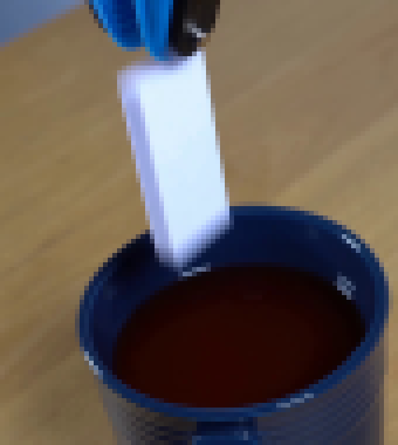
视觉工具实际返回图片 3
视觉工具实际返回图片 4
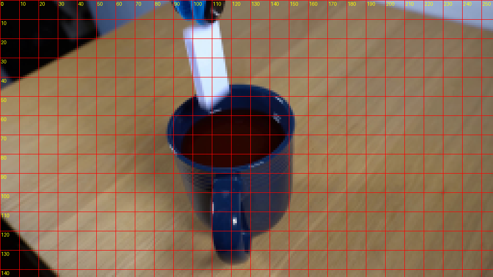
视觉工具实际返回图片 5
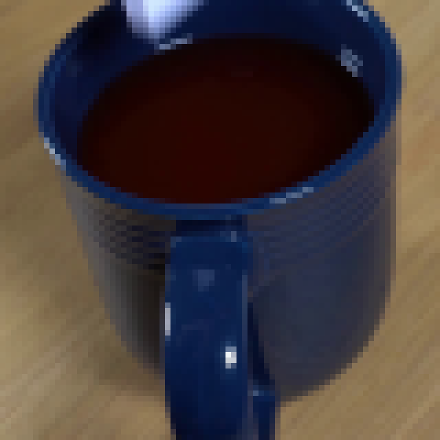
视觉工具实际返回图片 6
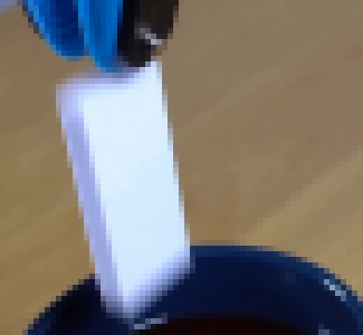
视觉工具实际返回图片 7
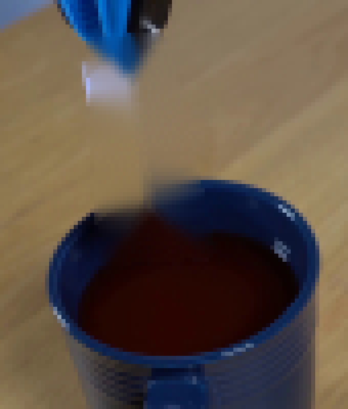
视觉工具实际返回图片 8
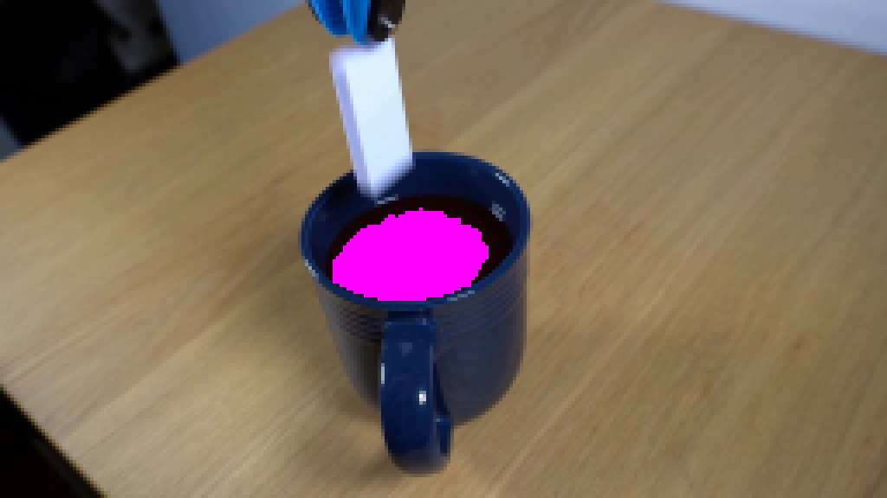
视觉工具实际返回图片 9
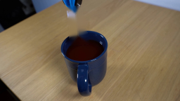
视觉工具实际返回图片 10
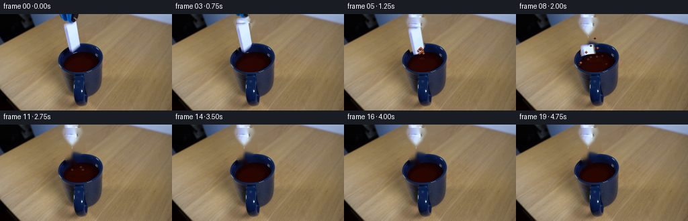
视觉工具实际返回图片 11
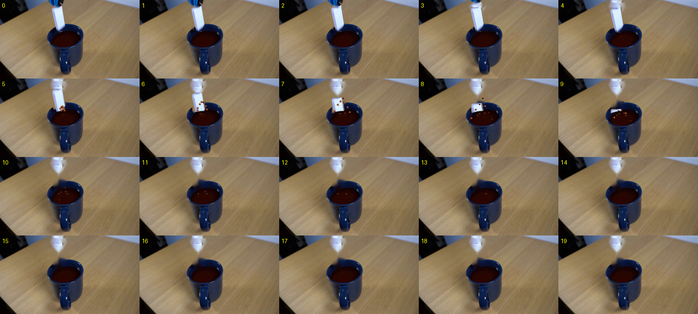
视觉工具实际返回图片 12
视觉工具实际返回图片 13
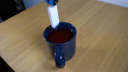
视觉工具实际返回图片 14
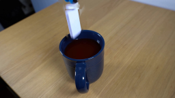
视觉工具实际返回图片 15
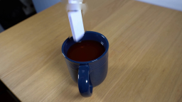
视觉工具实际返回图片 16

视觉工具实际返回图片 17
视觉工具实际返回图片 18
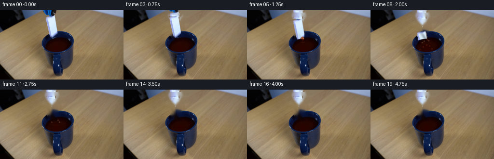
视觉工具实际返回图片 19
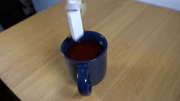
视觉工具实际返回图片 20
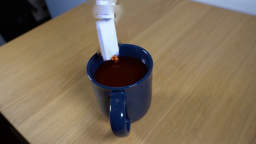
视觉工具实际返回图片 21
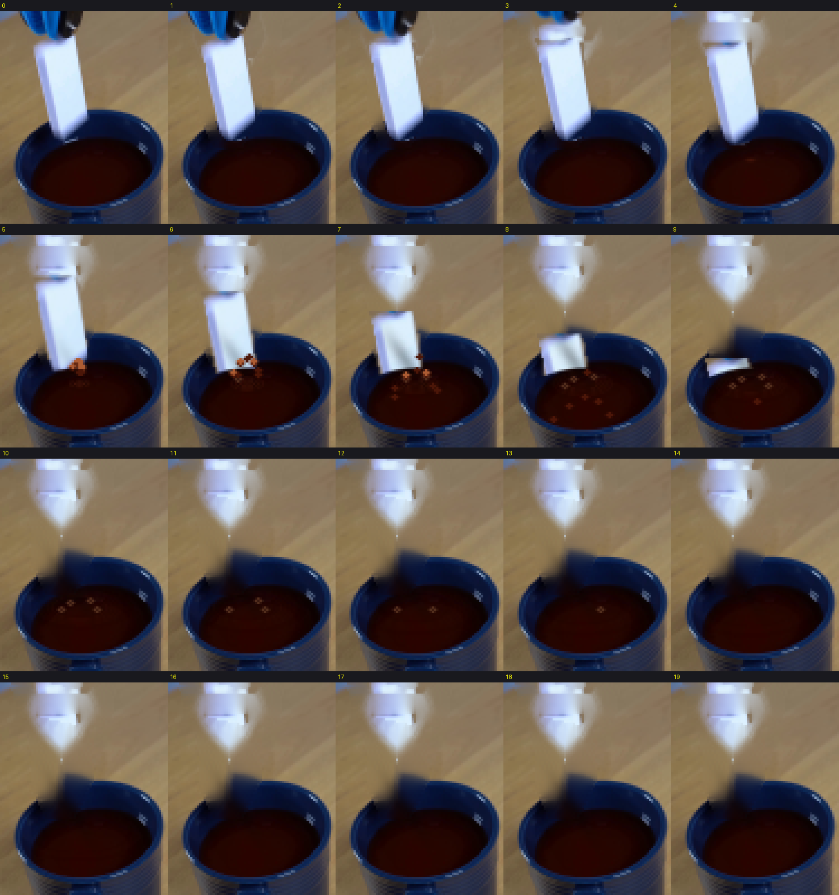
视觉工具实际返回图片 22

视觉工具实际返回图片 23
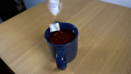
视觉工具实际返回图片 24
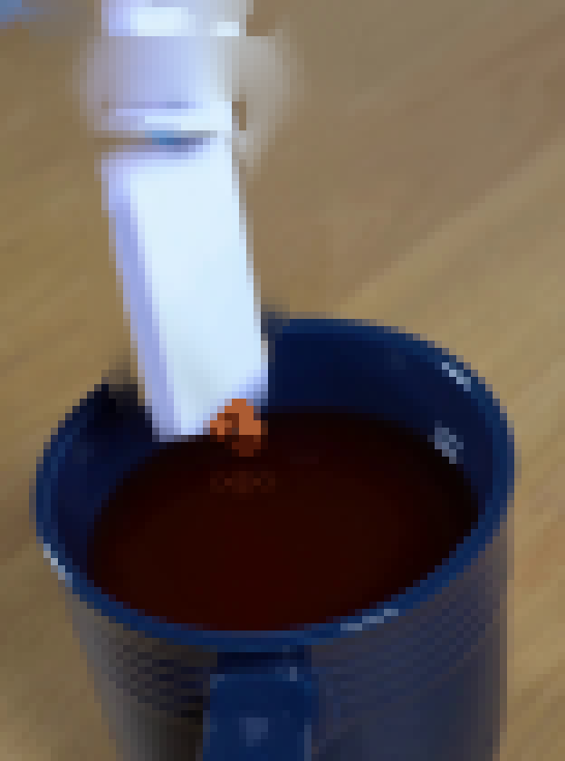
视觉工具实际返回图片 25
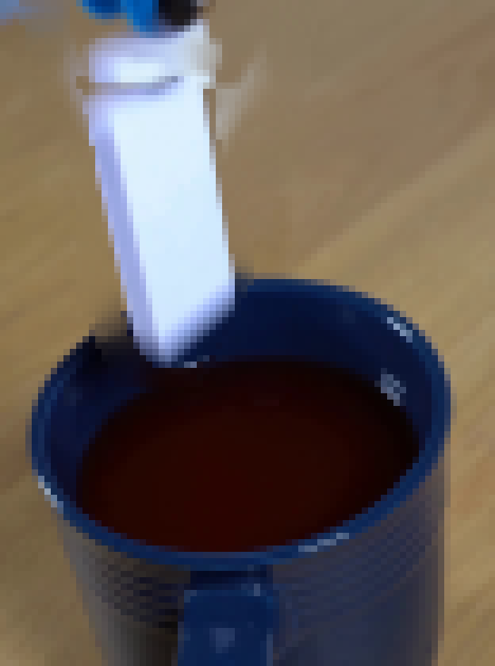
视觉工具实际返回图片 26
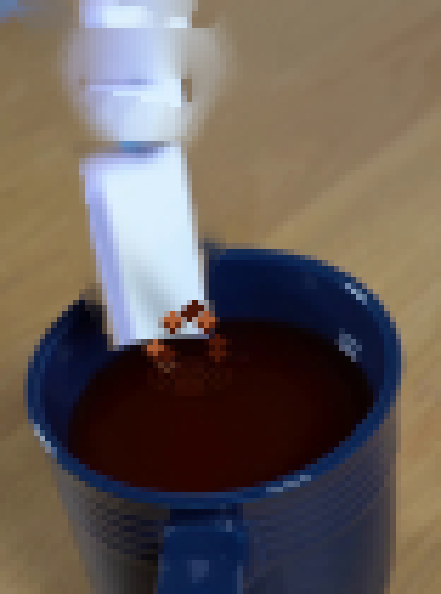
视觉工具实际返回图片 27
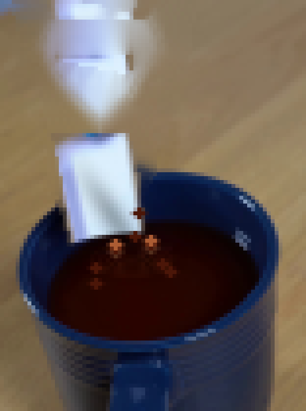
视觉工具实际返回图片 28
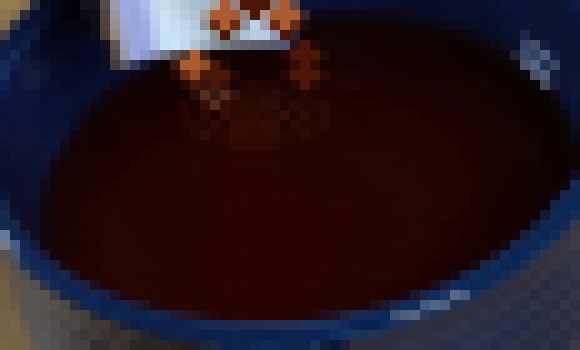
视觉工具实际返回图片 29
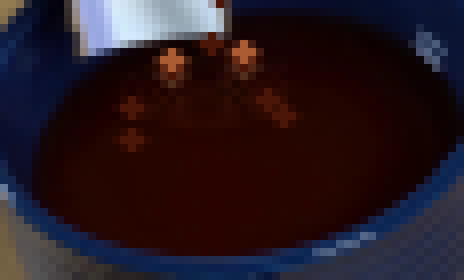
视觉工具实际返回图片 30
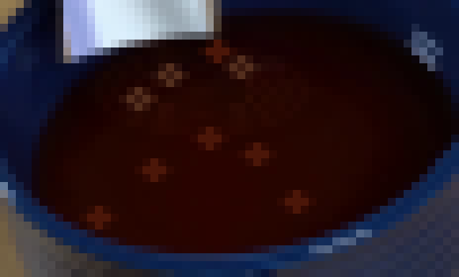
视觉工具实际返回图片 31
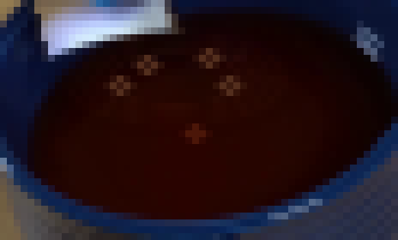
视觉工具实际返回图片 32
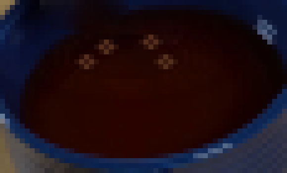
视觉工具实际返回图片 33
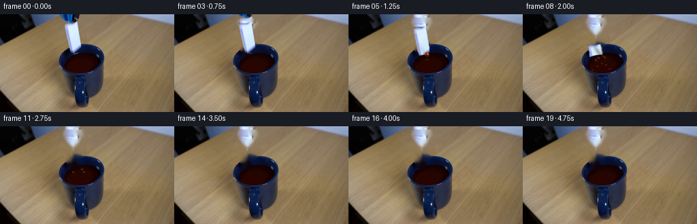
视觉工具实际返回图片 34
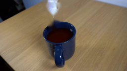
视觉工具实际返回图片 35
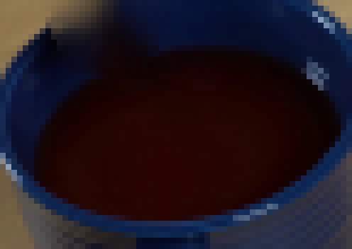
视觉工具实际返回图片 36
保存候选 3 份；完成命令 41 次；可验证图片返回 36 张。原始 API 响应与完整日志保留在本地。